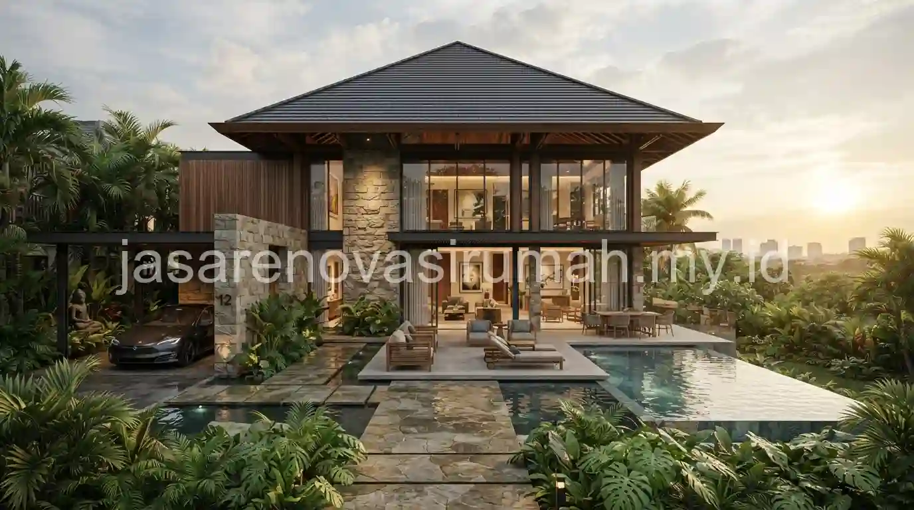
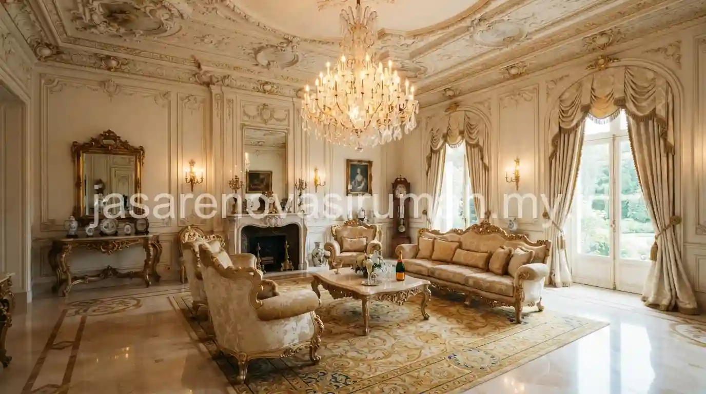

Jasa arsitek rumah mewah Jakarta yang berpengalaman mampu menerjemahkan visi pemilik tanah berukuran besar menjadi desain fasad klasik, modern tropis, atau perpaduan keduanya, lengkap dengan portofolio premium sebagai bukti kualitas kerja.
Rumah mewah memiliki kompleksitas desain yang berbeda dari rumah standar, mulai dari kebutuhan ruang yang lebih beragam hingga detail material yang lebih personal sesuai karakter dan gaya hidup pemilik.
Apa yang Membedakan Jasa Arsitek Rumah Mewah dengan Arsitek pada Umumnya?
Perbedaan utamanya terletak pada tingkat kustomisasi desain, pengalaman menangani lahan luas, serta kemampuan mengelola detail material premium yang lebih kompleks dibanding rumah standar.
Beberapa hal yang membedakan jasa arsitek rumah mewah:
- Portofolio proyek dengan skala tanah besar dan anggaran konstruksi tinggi.
- Kemampuan merancang ruang khusus seperti home theater, wine cellar, atau kolam renang privat.
- Pengalaman berkoordinasi dengan interior designer dan landscape architect secara terintegrasi.
- Pendekatan desain yang lebih personal, sering kali melalui sesi konsultasi mendalam dengan pemilik rumah.
Bagi pemilik yang sebelumnya sudah familiar dengan konsep desain rumah minimalis modern, jasa arsitek rumah mewah biasanya mengembangkan prinsip serupa namun dengan skala ruang dan detail material yang jauh lebih kompleks serta personal.
Gaya Fasad Apa yang Banyak Diminati untuk Rumah Mewah di Jakarta?
Dua gaya yang paling banyak diminati untuk rumah mewah di Jakarta adalah fasad klasik dengan elemen kolom dan detail ornamen elegan, serta modern tropis yang menonjolkan bukaan lebar dan material alami.

Berikut karakter dari kedua gaya tersebut:
| Gaya Fasad | Karakter Utama | Cocok Untuk |
|---|---|---|
| Klasik | Kolom besar, ornamen simetris, warna netral elegan | Pemilik yang menyukai kesan mewah timeless |
| Modern Tropis | Bukaan lebar, material kayu dan batu alam, taman terintegrasi | Pemilik yang mengutamakan kenyamanan iklim tropis |
| Kombinasi | Perpaduan garis modern dengan sentuhan elemen klasik terbatas | Pemilik yang ingin tampilan unik namun tetap elegan |
Pemilihan gaya sebaiknya juga mempertimbangkan kondisi lingkungan sekitar dan orientasi lahan, agar hasil akhir tidak hanya megah secara visual tetapi juga nyaman dihuni sehari-hari.
Bagaimana Proses Konsultasi Desain Rumah Mewah dari Awal hingga Gambar Final?
Proses konsultasi rumah mewah umumnya lebih mendalam dibanding rumah standar, dimulai dari sesi diskusi gaya hidup pemilik hingga beberapa kali revisi konsep sebelum gambar kerja final disepakati.
Tahapan umum yang biasa dilalui dalam proyek rumah mewah:
- Sesi konsultasi mendalam untuk memahami gaya hidup, kebiasaan, dan kebutuhan ruang khusus pemilik.
- Penyusunan konsep awal (skematik desain) berdasarkan hasil diskusi dan analisis lahan.
- Presentasi dan revisi konsep hingga mencapai desain yang disepakati bersama.
- Pengembangan gambar kerja detail termasuk spesifikasi material premium.
- Koordinasi dengan kontraktor dan interior designer untuk memastikan implementasi sesuai desain.
Melihat portofolio proyek sebelumnya menjadi langkah penting sebelum menentukan arsitek yang tepat, karena gaya visual dan kualitas detail setiap arsitek bisa sangat berbeda satu sama lain.
Kesalahan Umum Saat Memilih Arsitek untuk Rumah Mewah
Kesalahan yang paling sering terjadi adalah hanya melihat hasil render tanpa mengecek portofolio bangunan yang sudah benar-benar terbangun dan dihuni.
Kesalahan lain yang perlu dihindari:
- Tidak mendiskusikan anggaran secara terbuka sejak awal sehingga desain akhir sulit direalisasikan.
- Memilih arsitek tanpa pengalaman menangani lahan besar atau kebutuhan ruang khusus.
- Terburu-buru menyetujui konsep tanpa sesi diskusi mendalam mengenai gaya hidup penghuni.
Pada akhirnya, memilih jasa arsitek rumah mewah yang tepat berarti memastikan kesesuaian visi desain, pengalaman menangani proyek skala besar, dan portofolio nyata yang bisa dikunjungi langsung. Tim jasa arsitek kami siap membantu mewujudkan rumah mewah impian Anda, dan Anda bisa melihat referensi lengkap pada portofolio arsitektur mewah kami sebelum memulai konsultasi.